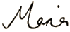

Maria Gill
Children's author-Freelance Writer

Maria Gill
Children's author-Freelance Writer
Anzac Stories: Behind the Pages Exhibition and Teaching Resources
Discover what inspired authors and illustrators to write and
illustrate their Anzac stories. Featuring well known award winning
authors such as Jackie French, Claire Saxby, Phil Cummings, Hazel
Edwards, Susanne Gervay, and many other excellent Australian authors
and illustrators, as well as Glyn Harper, Jennifer Beck, David Hill,
Maria Gill, Fifi Colston, Jenny Cooper and other awesome New Zealand
authors and illustrators.
Download the exhibition, print out the handouts and read all about the authors and illustrators including videos and
interviews. An excellent Anzac Resource free for all teachers and
librarians to use.
What Lies Beneath Exhibition - Teachers Resources
Please also feel free to download the following FREE Teaching Resource
An opportunity to discover what has contributed to the creation of children's books by some of your favourite New Zealand authors and illustrators in an exhibition that reveals the inspirations, the crafting and background work that goes into making children's books for NZ children including works by Margaret Mahy and David Elliot, Gavin Bishop, Fifi Colston and David Hill, Maria Gill and Heather Arnold, Melinda Szymanik, Jennifer Beck and Lindy Fisher, Kyle Mewburn and Donovan Bixley, and Joy Cowley and Robyn Belton.
Kia ora teachers,
I can offer school visits, workshops,
and give talks to teachers or writers. Please email
me for further information.
I've written teaching resources for the following companies:
Ages 14-16
Please feel free to download the FREE teaching resources that go with all my books:
Keep an eye on this page because I'll be loading more educational units with each of my books.
I hope your class enjoys the units!
Cheers

Teachers' Workshop:
Using Dynamic Non-fiction in the Classroom
This workshop will encourage teachers to incorporate a dynamic non-fiction reading and writing unit in the classroom. In the session I will talk about a reading unit that will encourage children to love reading non-fiction books for pleasure. The unit uses thinking skills to enhance their ability to read non-fiction text and culminates in a non-fiction book ceremony. I will also talk about the characteristics of good non-fiction writing skills showing how to utilise fiction techniques to pep up their non-fiction stories. Teacher workshops can be combined with school author talks for students.
The workshops can be held in your staff room after school or during the school holidays.
If the workshop is tagged onto a day's booking it is free, if onto a half-day author talk or workshop with students - the teachers' workshop is at the special price of $100 per workshop. If you want me to do a Teachers workshop only it is $150 plus travel expenses.
For selected activities such as comprehension sheets, crosswords or wordfinds to go with the books click on the following to download and print:
Bird's-eye View Activity - PDF 45kb
Operation Nest Egg Activity - PDF 44kb
Derek Landy, author of the 'Skulduggery Pleasant' series
interview. READ MORE
Fleur Beale, author of 'Juno of Taris',
interview. READ MORE
Kyle Mewburn, author of 'Old Huhu', interview. READ
MORE
Kate de Goldi, author of the '10 PM Question',
interview. READ MORE
Lorraine Orman, author of 'Haunted', interview. READ
MORE
Michael Morpurgo, author of 'Running Wild'
interview. READ MORE
Teachers, if you're looking for children's or young adult books to
recommend to your students - please check out the NZ Kids Books Blog. The site provides links to
teaching resources and interviews that go with the book. The
reviewers are either teachers or librarians and are also published
authors.
If your class or school have been doing good deeds in the
environment - please tell me about it so I can include it on the Eco-rangersNZ
blogsite.

2018 Maria Gill
FIND US ON SOCIAL MEDIA